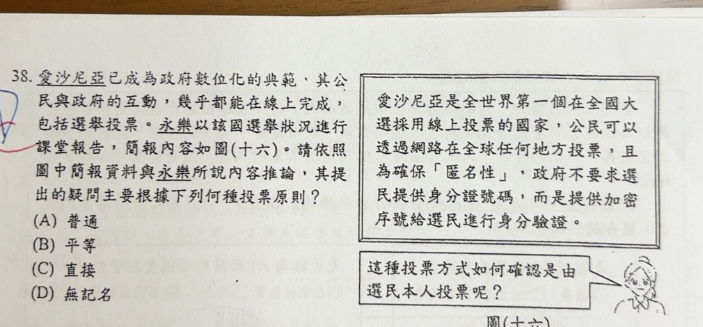

分享原卷｜第38題
完整原題
作答所需文章／材料
圖(十六) 簡報資料： 愛沙尼亞是全世界第一個在全國大選採用線上投票的國家，公民可以透過網路在全球任何地方投票，且為確保「匿名性」，政府不要求選民提供身分證號碼，而是提供加密序號給選民進行身分驗證。 永樂提出疑問： 「這樣投票方式如何確認是由選民本人投票呢？」愛沙尼亞已成為政府數位化的典範，其公民與政府的互動，幾乎都能在線上完成，包括選舉投票。永樂以該國選舉狀況進行課堂報告，簡報內容如圖(十六)。請依照圖中簡報資料與永樂所說內容推論，其提出的疑問主要根據下列何種投票原則？
(A) 普通
(B) 平等
(C) 直接
(D) 無記名
先想一想，再查看答案、解說與原圖
原卷作答：原卷藍筆D，紅筆訂正C。
(C) 直接
逐項解析
| 選項與原句 | 判讀 | 句意與判斷理由 |
|---|---|---|
| (A) 普通 | 不選 | 普通原則關心達法定資格者是否享有選舉權，不是本題本人辨識的重點。 |
| (B) 平等 | 不選 | 平等原則關心票值或投票權平等，不是本題提問。 |
| (C) 直接 | 應選 | 原題以確認選民本人親自行使投票權，對應教材的直接投票分類。 |
| (D) 無記名 | 不選 | 匿名性是簡報背景，但永樂問的是本人投票，不是選擇有沒有保密。 |
詳細說明與解題步驟
永樂問的是「如何確認是由選民本人投票」，關心親自行使投票權、避免他人代為投票。依國中教材常見的題目分類，這裡對應直接投票的本人投票要求，原卷預期選C。
簡報雖出現「匿名性」，但那是背景敘述；無記名原則關心選民的選擇是否保密，不是永樂最後所問的本人身分。匿名與身分驗證也能同時存在：可以確認誰有資格投票，同時不公開其選擇。
精確概念上，「直接選舉」的核心是選民直接決定當選者，不經另一層選舉人代選；不能把任何身分驗證都直接定義為直接選舉。本題則以本人投票的疑問連到教材分類。
核對：[中選會投票須知（親自投票、不得委託代投）](https://web.cec.gov.tw/api/file/4c8d6cd9-8328-435d-b8af-3168699380bc.pdf)。
核對註記：已實開真正上傳原卷及本題裁切成品，核對完整題幹、全部選項、必要材料與解說。未提供實際考試日期，日期取本題首次使用者訊息（台灣時間）；無冊次或課次證據，歸綜合。
原圖（僅本題）
